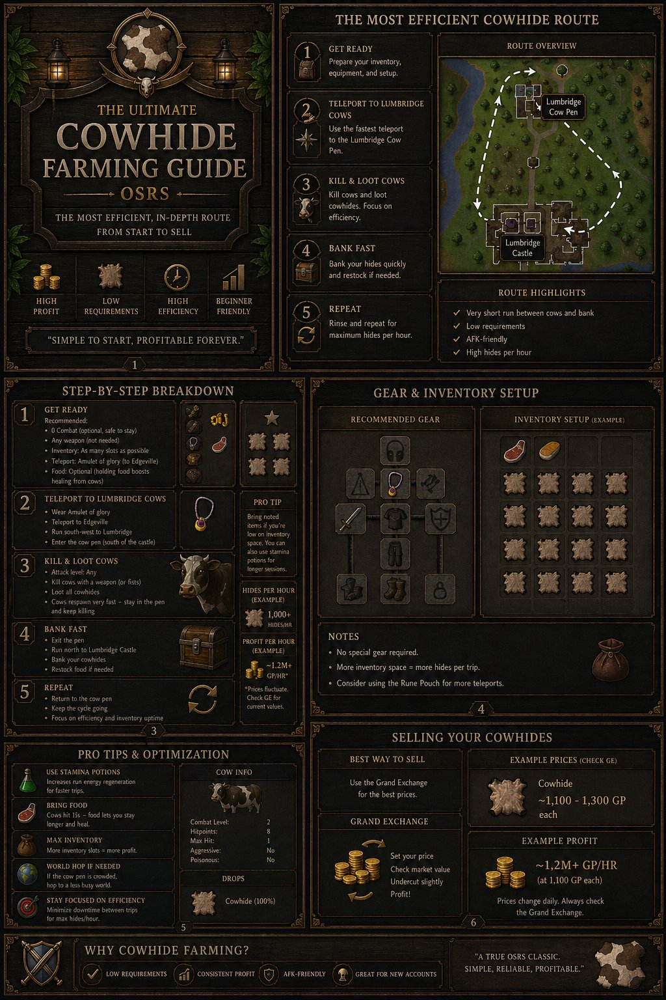
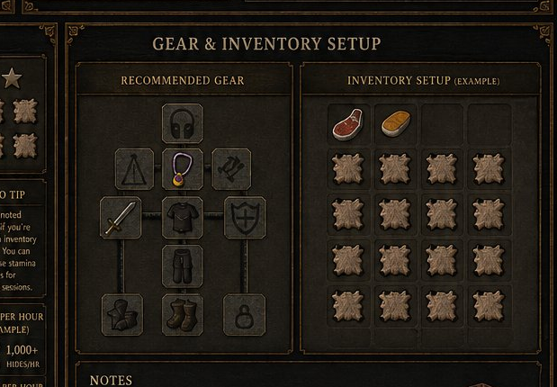
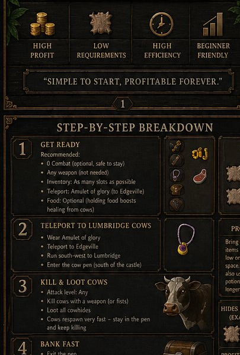
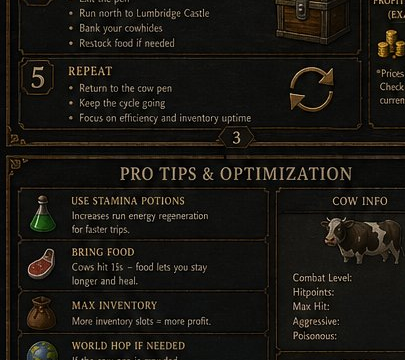
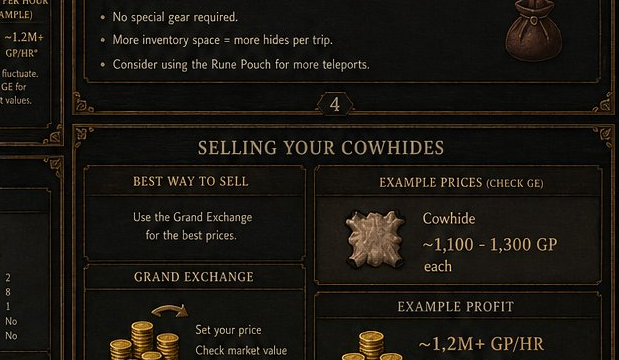

Cowhide Farming
The most efficient, in-depth route from start to sell. A true OSRS classic — simple to start, profitable forever.
Quick-View Infographic
The full guide at a glance. Click to zoom — drag to pan, scroll to zoom further.

Why Cowhide Farming?
Cowhide farming is one of the oldest, most reliable, and most beginner-friendly money-making methods in Old School RuneScape. It's been profitable since 2001 and there's no sign of that changing — cowhides are a staple Crafting input that maintains steady demand on the Grand Exchange year-round.
What makes it great
- No requirements. Any combat level, any skill level, any account state.
- F2P friendly. Works perfectly without membership.
- Steady demand. Crafters always need leather, so hides sell within seconds on the GE.
- Bot-resistant zones. While bots exist, the spawn rate is high enough to remain efficient.
- Easy to multitask. Watch a video, listen to music — this is one of the most relaxed methods in the game.
- Bonus XP. Free combat XP as you go.
Requirements
Hard Requirements
- Combat: None — even level 3 works
- Skills: None
- Quests: None
- Membership: Not required (F2P viable)
- Items: None — fists work fine
Strongly Recommended
- Any weapon (an iron scimitar costs ~150 gp and triples kill speed)
- Empty inventory for max hides per trip
- ~5,000 GP for a starter weapon and starter food
- Run energy > 50% before starting
Best Cow Locations
Lumbridge is the recommended default, but knowing alternative spots helps when worlds get crowded or when you want a change of pace.
| Location | Tier | Bank Distance | Cow Count | Rating |
|---|---|---|---|---|
| Lumbridge Cow Pen (recommended) | F2P | ~30 sec to Lumbridge bank | ~25 cows | ★★★★★ |
| Falador North-East Field | F2P | ~45 sec to Falador east bank | ~10 cows | ★★★★☆ |
| Crafting Guild Cows (40 Crafting + brown apron) | F2P | ~45 sec to Falador west bank | ~6 cows | ★★★☆☆ |
| Burthorpe (Tutorial-Adjacent) | F2P | ~50 sec to Burthorpe bank | ~8 cows | ★★★☆☆ |
| Ardougne North | Members | ~40 sec to Ardougne bank | ~10 cows | ★★★★☆ |
| Champions' Guild Cows | F2P | ~60 sec to Lumbridge or Edgeville | ~5 cows | ★★☆☆☆ |
The Route (Lumbridge)
The Lumbridge route is short, simple, and AFK-friendly. The cow pen sits just north of Lumbridge Castle — the world's most efficient cow-to-bank loop.
Route Highlights
- Very short run between cows and bank — ~30 seconds each way at full energy
- No agility shortcuts required
- The cow pen is a fenced enclosure, so cows can't wander far from spawn points
- Low-aggression zone — cows won't attack you while banking nearby
Gear Setup
Cowhide farming has no required gear, but lightweight equipment with weight reduction lets you maintain run energy for longer trips.

Total cost: ~500 gp
- Weapon: Iron scimitar (~150 gp)
- Body: Leather body or a free spawn item
- Legs: Anything light
- Boots: Anything (or boots of lightness if grinded)
- Cape: Any cape
Don't waste money here. Cows hit a max of 1, so defensive gear is pointless. Focus on weight reduction if you have any options.
Total cost: ~50k gp
- Weapon: Rune scimitar (~15k gp)
- Body: Boots of lightness or weight-reducing top
- Cape: Team cape (free) or skill cape if you have one
- Boots: Boots of lightness (-4.5kg)
- Gloves: Leather gloves
In F2P your big efficiency bump comes from boots of lightness (Temple of Ikov, members only — but transferable items). Without members access, focus on a fast weapon and stay aware of run energy.
Total cost: ~30k gp
- Weapon: Rune scimitar or Saradomin sword if you have one
- Cape: Ardougne cloak 1+ (Easy diary teleport)
- Neck: Amulet of glory (Edgeville teleport)
- Ring: Ring of dueling or stamina jewelry
- Legs/Body: Boots of lightness, anything light
In members, an amulet of glory is the cheapest big upgrade — it lets you teleport to Edgeville bank and skip the run from Lumbridge entirely.
Total cost: ~500k gp+
- Weapon: Whip or scimitar of choice
- Cape: Graceful cape or Ardougne cloak 4 for teleport
- Neck: Amulet of glory (4)
- Body/Legs: Full graceful (-25kg total)
- Ring: Ring of wealth (i) for GE access on the move
- Pouch: Rune pouch with Falador / Camelot / Varrock teleport runes
Full graceful + glory is the comfort tier. You'll never run out of energy and can teleport-bank from anywhere if you decide to switch cow locations mid-session.
Inventory Setup
The inventory is straightforward: more empty slots = more hides per trip. The choice is whether to bring food and teleports or go fully empty.
28 hides per trip
Empty inventory. You bank when full. Best raw GP/hr if you don't get hit (and at 1 max damage from cows, you almost never need food).
- No food, no potions, no teleports
- Run from cow pen → bank → back
- Max possible hides per session
26 hides per trip
For very low-level accounts (combat 3–10) who want extra safety. Cows hit max 1 so this is mostly psychological — but if you're truly fragile, cooked meat works fine.
- 2 cooked meat or shrimp (heals 3–4 each)
- 26 inventory slots free for hides
- Recommended only for very low-HP characters
25 hides per trip + faster banking
If you have an Amulet of Glory and a teleport tab or rune pouch, you can teleport to Edgeville and walk to the bank far faster than running back. Net trips/hour goes up, even with fewer hides per trip.
- Stamina potion (4 doses, optional)
- Rune pouch with Falador/Varrock teleport runes
- Amulet of glory (in equipment, not inventory)
Step-by-Step Walkthrough

-
Get Ready
Stand at Lumbridge bank with an empty inventory. Equip your weapon and any weight-reducing gear you have. Confirm run energy is at 100%.- Combat: any level (level 3 works)
- Inventory: as empty as possible
- Set "auto-retaliate" ON in your combat tab
- Tick "Always swap right-click attack" if you ever right-click cows by accident
-
Travel to the Cow Pen
Exit the castle out the north or east doorway. The cow pen is the fenced enclosure visible just to the north-east of Lumbridge Castle.- If using Amulet of Glory: teleport to Edgeville → Wilderness wall → run south is too slow. Skip glory for the first trip and use it for the bank loop later.
- If F2P: just walk north out of the castle and into the pen
- Enter the pen through the wooden gate (right-click → Open)
-
Kill & Loot Cows
Click any cow to attack. They have 8 HP and a max hit of 1. Loot the cowhide that drops, then immediately click the next cow. Don't pause — cows respawn very fast inside the pen.- Combat level: 2 — you'll always hit them
- HP: 8 (one or two hits with most weapons)
- Drops: Cowhide (100%) + raw beef (always) + bones (always)
- Strategy: Drop the bones and raw beef as you go — they're not worth banking time
- Stay inside the pen — wandering out wastes time and breaks the rhythm
-
Bank Fast
When your inventory is full of hides, exit the pen and run south to Lumbridge Castle. Use the bank chest on the upper floor.- F2P: Lumbridge Castle bank (top floor) — closest option
- Members shortcut: Amulet of glory → Edgeville bank
- Deposit all hides in one click using the "deposit inventory" button
- Restock food only if needed (most runs don't need any)
-
Repeat
Run back to the cow pen. Each round trip is roughly 4–5 minutes. Aim for 12–14 trips per hour for the best GP.- Maintain rhythm — every second of downtime adds up
- If the world is crowded, hop to a less popular world between trips
- Track your inventory carefully — it's easy to forget you've already filled up
- Aim for 1,000+ hides/hr on a good session
Banking Strategies
The bank you choose dramatically affects your hides-per-hour. Here are the options ranked from best to worst:
① Lumbridge Castle Bank — Recommended for F2P
The castle bank chest is on the upper floor, ~30 seconds from the cow pen. Closest standard option. F2P-friendly.
② Amulet of Glory → Edgeville Bank — Recommended for Members
Teleport from inside the pen straight to Edgeville. Edgeville bank is right next to the teleport spot. Even faster than Lumbridge if you have charged glories.
③ Tele-Noting via Phials (Members)
Phials in Rimmington will note your hides for 5gp each. Useful only for very specific routes — generally not worth the run time for cowhides.
Pro Tips & Optimization

⚡ Stamina Potions
A single (4)-dose stamina lasts ~16 minutes of constant running. Worth it on long sessions if you have one — but not required, since the run from pen to bank is so short.
🌍 World Hopping
Lumbridge is THE most populated area in OSRS. Hop worlds aggressively if cows aren't respawning fast enough. Less populated worlds mean less competition.
📦 Max Inventory Slots
Every freed slot = more hides per trip = more GP/hr. Drop bones and raw beef the moment they appear. Don't carry food unless you need it.
🎯 Stay Focused
Cowhide farming is AFK-friendly but minimum downtime is the difference between 1,000 and 1,400 hides/hr. Don't get distracted by chat or other players in the area.
🔄 Auto-Retaliate
Turn auto-retaliate ON. When a cow you didn't click decides to attack you, you'll automatically engage them and not waste a tick.
🛡️ Don't Bring Armor
Heavy armor reduces run energy regen. Cows max hit 1, so defense is meaningless. Wear lightweight or weight-reducing pieces only.
💍 Ring of Wealth (i)
Members-only, but lets you check Grand Exchange prices on the go. Useful for adjusting your sell prices between trips.
📈 Track Your Sessions
Use a session tracker (or just your bank screenshots) to see how many hides you bank per hour. This helps you spot inefficiencies.
Profit Calculator
Adjust the inputs to see your projected earnings. GE prices fluctuate daily — always check the live price before a long session.
* Prices fluctuate. Check the Grand Exchange for live values.
What to Do With Your Hides

💰 Sell on the Grand Exchange
The default play. Hides sell within seconds at market price.
- Always check the current price first
- Sell at GE-1 to undercut and instasell
- Larger volumes (1,000+) may need to be split
🪡 Tan into Leather
Bring hides to a tanner (Al Kharid, Crafting Guild). Cost is 1 gp per hide for leather, 3 gp for hard leather.
- Leather: tiny profit margin, mostly for irons
- Hard leather: can be more profitable if margins are wide
- Useful for Crafting training
🎒 Crafting XP (Ironman)
Soft leather → leather gloves/body for early Crafting XP.
- Leather gloves: 13.8 XP each (lvl 1)
- Leather body: 25 XP each (lvl 14)
- Free path from Crafting 1 → 30+
📦 Hoard for Later
Cowhide prices spike during Crafting events and league seasons.
- Keep an eye on the GE chart
- Spikes of +30% are not uncommon
- Only useful if you have bank space to spare
Common Mistakes
Frequently Asked Questions
Alternative Methods (Comparison)
If you've outgrown cowhide farming, here are the natural next steps:
| Method | GP/Hour | Requirements | Tier |
|---|---|---|---|
| Cowhide Farming (this guide) | ~1.2M | None | F2P |
| Wines of Zamorak | ~1.5M | 33 Magic, telegrab runes | Members |
| Sandstone Mining | ~250–350k | 35 Mining, Enakhra's Lament partial | Members |
| Flax Spinning | ~150k | 10 Crafting | F2P |
| Blue Dragons (Taverley) | ~500k | Combat 60+, Dragonfire shield | Members |
| Zulrah | ~3M+ | Regicide, high stats, mage gear | Members |
"A true OSRS classic. Simple, reliable, profitable."
← Back to the Library